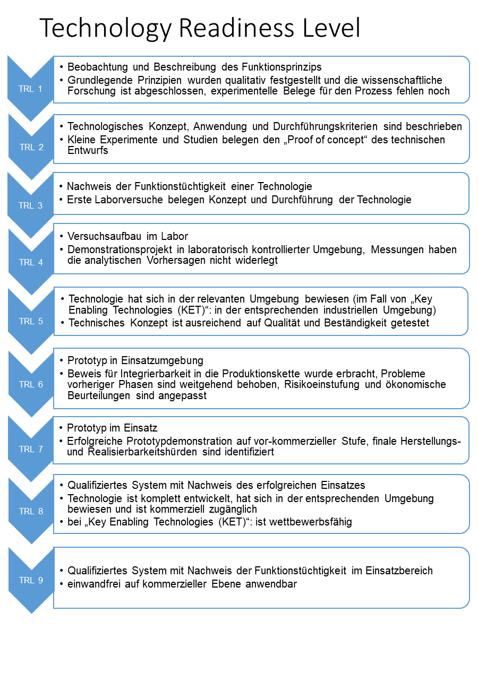
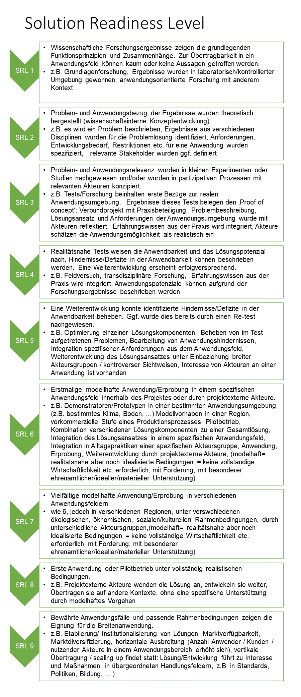

Reifegrade - Readiness Level
Was ist das und wozu ist das nützlich?
Readiness Level werden verwendet, um den Reifegrad einer Technologie oder Innovation von der Grundlagenforschung bis zur Anwendungsreife zu beschreiben.
Der Weg von Stufe 1 bis Stufe 9 umfasst dabei üblicherweise einen Entwicklungszeitraum von 15 – 30 Jahren. Bitte berücksichtigen Sie dies für die realistische Einordnung Ihres geplanten Projektfortschrittes!
Technology Readiness Level und Solution Readiness Level - Hintergründe und Unterschiede
Die Technology Readiness Level wurden ursprünglich für die Technologiebewertung in der Raumfahrt entwickelt und sind bereits langjährig standardisiert (DIN ISO 16290:2016-09). Die Grundlage für die hier gezeigten Stufen ist die TRL-Definition der NASA http://esto.nasa.gov/files/trl_definitions.pdf

Da Technology Readiness Level nur bedingt für die Einschätzung des Reifegrades sozialer Innovationen geeignet sind, wird daran gearbeitet einen äquivalenten Solution Readiness Level zu erarbeiten.
Die Grundlage für die hier gezeigten Solution Readiness Level sind die Arbeiten von Schön et al. 2020. Die dort entwickelten Solution Readiness Level wurden für die Einschätzung der Anwendungsreife von nachhaltigen Systemlösungen im Kontext transdisziplinärer Forschungsprojekte ausgerichtet. Sie nehmen die Einordnung anhand der Akteurskonstellation, der Aktivitäten im Projekt und dem Gegenstand der Arbeiten vor.
Die im SynSICRIS Monitoring-Tool verwendeten Level basieren auf diesen Arbeiten und wurden durch eine Verallgemeinerung der Beschreibung für einen breiteren Nutzungskontext angepasst.

Für mehr Hintergründe und konkrete Hilfen für die Einordnung empfehlen wir:
Schön, S./Eismann, C./Wendt-Schwarzburg, H./Kuhn, D.: Transdisziplinäres Innovationsmanagement. Nachhaltigkeitsprojekte wirksam umsetzen. Bielefeld 2020. Kapitel 2: 2 Anwendungsreife: Wie reif soll unsere Lösung werden?
Kostenloser Download: https://www.wbv.de/openaccess/themenbereiche